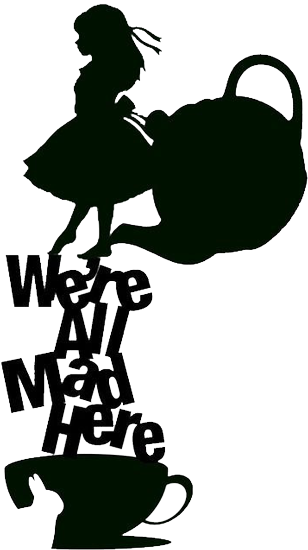

- А де я можу знайти кого-небудь нормального?
- Ніде, - відповів Кіт,
- нормальних не буває. Адже всі такі різні і несхожі. І це, по-моєму, нормально.
Не сумуй. Рано чи пізно все стане на свої місця і вибудується в єдину красиву схему, як мережева. Стане ясно, для чого все було потрібно, томущо все буде правильно.
У ролях
- Міа Васиковська - Аліса Кінгслі.
- Джонні Депп - Таррант Циліндр, Божевільний Капелюшник
- Хелена Бонем Картер - Ірацібета фон Крімс, Червона Королева
- Енн Хетеуей - Мірана фон Мараморіал, Біла Королева
- Кріспін Гловер - Ілосовіч Стейн, Валет Черв'яків
- Метт Лукас - Верть і Круть
- Майкл Шин - Нівенс МакТвісп, Білий Кролик (озвучування)
- Стівен Фрай - Чеширський Кіт (озвучування)
- Алан Рікман - Абсолю, Синя Гусінь (озвучування)
- Барбара Віндзор - Мальямкін, миша Соня (озвучування)
- Пол Уайтхаус - текера Ірвікет, Березневий Заєць (озвучування)
- Тімоті Сполл - Баярд Хаммар (озвучування)
- Мартон Чокаш - Чарльз Кінгслі, батько Аліси
- Тім Пиготт-Сміт - лорд Ескот, новий власник торгової фірми Кінгслі
Потрібно бігти з усіх ніг, щоб тільки залишатися на місці, а щоб кудись потрапити, треба бігти як мінімум удвічі швидше!
Завтра ніколи не буває сьогодні! Хіба можна прокинутися вранці і сказати: "Ну ось, зараз нарешті завтра"?
